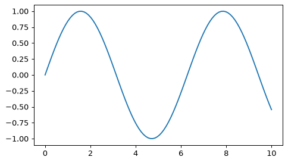
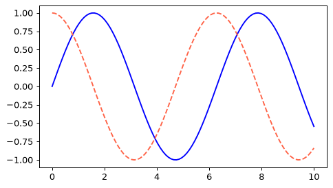
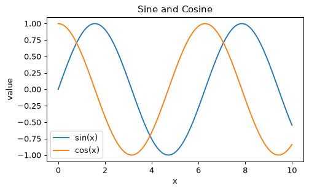
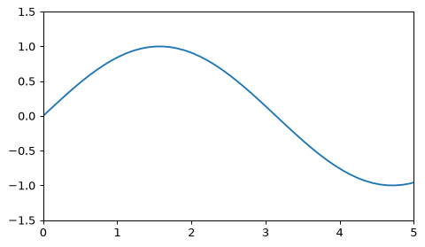
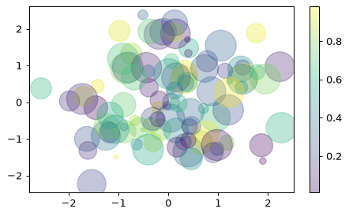
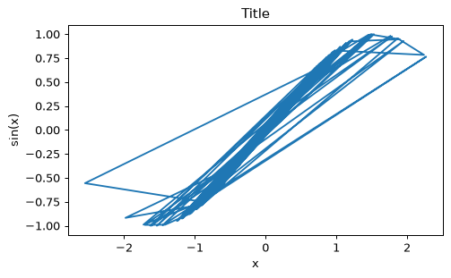

- Handbook 4.01 Simple Line Plots
- Handbook 4.02 Simple Scatter Plots
はじめの1枚：折れ線グラフ
Matplotlibは、Pythonの代表的なグラフ描画ライブラリです。慣習としてimport matplotlib.pyplot as pltと書きます。
import numpy as np import matplotlib.pyplot as plt x = np.linspace(0, 10, 100) plt.plot(x, np.sin(x))

2本以上の線は、plotを続けて呼ぶだけです。色（color）や線の種類（linestyle）も指定できます。
plt.plot(x, np.sin(x), color='blue', linestyle='-') plt.plot(x, np.cos(x), color='tomato', linestyle='--')

| 線の種類 | 書き方 |
|---|---|
| 実線 | '-' / 'solid' |
| 破線 | '--' / 'dashed' |
| 一点鎖線 | '-.' |
| 点線 | ':' |
plt.plot(x, y)が基本。xが横軸、yが縦軸の値のリストです。
x = np.linspace(0, 10, 100) の y = x ** 2 を赤の破線で描くコードを書いてください。
plt.plot(x, x ** 2, color='red', linestyle='--')
colorとlinestyleを指定します。
軸・タイトル・凡例を付ける
グラフにはタイトル、軸ラベル、複数の線なら凡例を付けます。
plt.plot(x, np.sin(x), label='sin(x)') plt.plot(x, np.cos(x), label='cos(x)') plt.title('Sine and Cosine') plt.xlabel('x') plt.ylabel('value') plt.legend()

軸の範囲はplt.xlim・plt.ylim、またはplt.axis([xmin, xmax, ymin, ymax])で変えられます。
plt.plot(x, np.sin(x)) plt.xlim(0, 5) plt.ylim(-1.5, 1.5)

線ごとにlabel=を付けて、最後にplt.legend()。タイトル・軸ラベル・凡例の3点セットを習慣にしましょう。
タイトルを Test、x軸ラベルを x、y軸ラベルを y にするコードを書いてください。
plt.title('Test') plt.xlabel('x') plt.ylabel('y')
3つの関数を呼びます。
散布図：plt.scatter
点の集まりを描くにはplt.scatterを使います。点ごとに大きさ（s）や色（c）を変えられます。
rng = np.random.RandomState(0) x = rng.randn(100) y = rng.randn(100) colors = rng.rand(100) sizes = 1000 * rng.rand(100) plt.scatter(x, y, c=colors, s=sizes, alpha=0.3, cmap='viridis') plt.colorbar()

alphaは透明度（0〜1）です。点が重なるときは小さくすると見やすくなります。plt.colorbar()で色と値の対応を表示します。
scatterよりplt.plot(x, y, 'o')のほうが速いです（点ごとの大きさ・色が要らないとき）。scatterは「1つの点に、大きさと色という2つの追加情報を持たせられる」のが強みです。
xとyの散布図を、透明度0.5で描いてください。
plt.scatter(x, y, alpha=0.5)
alphaで透明度を指定します。
Figure と Axes：2つの書き方
Matplotlibには2つの書き方があります。1つ目はplt.plot(...)のような簡易スタイル。もう1つは、fig（図全体）とax（1つのグラフ領域）を作って、axに命令するオブジェクト指向スタイルです。
fig, ax = plt.subplots() ax.plot(x, np.sin(x)) ax.set_title('Title') ax.set_xlabel('x') ax.set_ylabel('sin(x)')

plt.title → ax.set_title、plt.xlabel → ax.set_xlabel、plt.xlim → ax.set_xlim。複数のグラフを扱うときは、axで書くのが基本になります。figは「額縁（キャンバス全体）」、axは「その中の1枚の絵」。
fig, ax = plt.subplots() で作り、axにx, yの線を描いてタイトルを My plot にしてください。
fig, ax = plt.subplots() ax.plot(x, y) ax.set_title('My plot')
axのメソッドはset_が付きます。